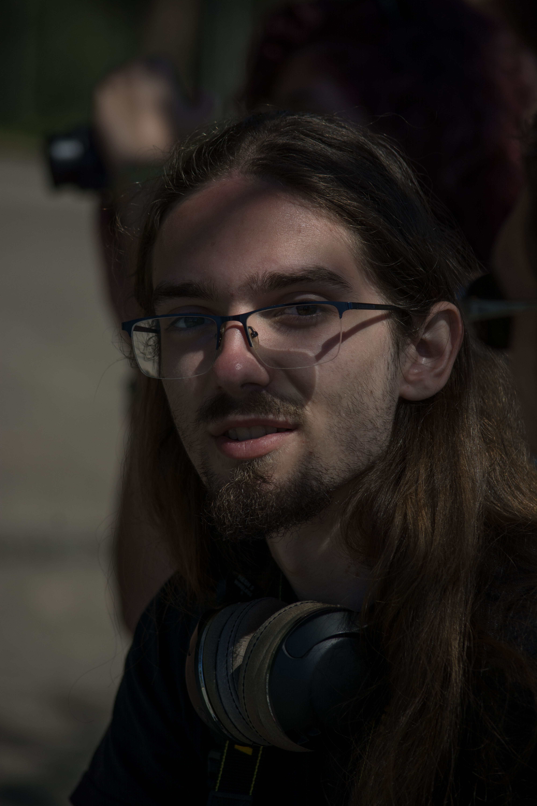

My Journey and Vision
Photography has always been more than just a profession for me—it’s a way to connect with the world around me. My journey began with a simple camera and a love for capturing natural light, wildlife, and candid moments. Over the years, this passion has evolved into a career of storytelling through images.
My vision is to create photographs that not only showcase the beauty of animals and nature but also inspire compassion and awareness. Whether I’m documenting the vibrant life of a zoo or capturing the hopeful eyes of an animal in a shelter, I aim to evoke emotion and tell meaningful stories through my lens.